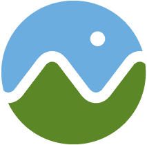

Independent Study Projects

DMD and CGGT students:
I am seeking students interested in collaborating on an independent study in open-source software development in Spring 2017. The goal is to create useful libraries, applications, or teaching material to make impact in the graphics industry.
Topics of interest are:
- glTF - the runtime asset format for WebGL. Projects may include importers and exporters for modeling tools, optimization pipelines, extensions, and reference implementations for loaders and renderers.
- WebGL - JavaScript API for hardware-accelerated graphics on the web. Projects may include compression libraries, debugging and profiling tools, and tutorials and samples.
- Cesium - an open-source JavaScript library for 3D globes. Projects may include streaming massive 3D models, rendering algorithms and optimizations, and visualization demos.
In addition to learning deeply about the selected topic, you will also learn software development best practices and open-source culture. Your work is likely to get significant industry attention and make you very attractive as a job candidate.
See below for projects from previous semesters.
Please email me to learn more. I can only advise a limited number of students per semester.